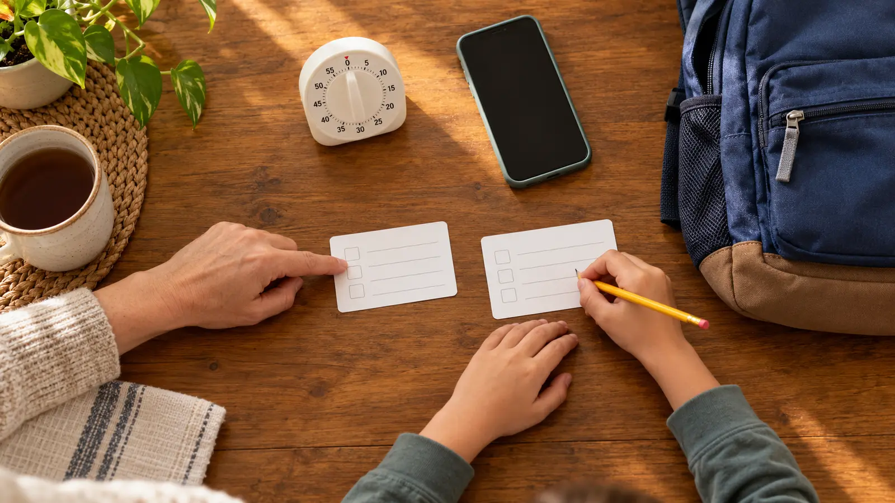

0–4 minutes · collect
Adult writes the minimum contacts from verified records. Call or message each non-household contact beforehand for consent and current number.
AT HOME · 20 MINUTES · NO-SPEND · AGES 7+
A contact card is useful only if a child can find it, read it and explain the first safe step. Make one small card, rehearse without placing a real emergency call, and remove every detail that does not earn the privacy risk.

FEMA’s communication-plan model is collect, share and practice. For a school-age child’s carry card, begin with one parent/guardian contact, one backup adult, one out-of-town contact if the family uses one, and the school/caregiver main number. Add meeting-place language only if the child already understands the family plan. Do not turn the card into a portable identity file.
Leave off Social Security numbers, insurance numbers, account logins, full medical histories, schedules, door codes and anything a stranger could use to enter the home or impersonate the family. A necessary medical or communication note belongs in the family’s established care plan, not automatically on a child’s public-facing card. Ask the child’s school what it already holds and how it handles updates.
Lane 1—ordinary problem: a ride is late, a practice ends early or the child cannot find the adult at a familiar staffed place. Stay with the responsible adult or staff member and use the ordinary contact order. Lane 2—separated in public: stop, move to a safe staffed point if directed, identify a uniformed employee or another agreed helper and use the family separation plan. Lane 3—immediate emergency: when police, fire or ambulance help is needed now, call 911.
The National 911 Program says callers should be ready to give the location, callback number, nature of the emergency and relevant details, then follow instructions and not hang up until told. Practice those categories with invented data on an unplugged device. Never stage a frightening scenario or make a child responsible for adult safety.
If any step fails, change the design, not the child. Larger type, icons, a shorter list, a different pocket, braille, a communication board or an AAC-compatible version may be the right system. Consult the child’s established support team when communication needs are complex.
A paper copy matters because networks and power can fail. FEMA advises keeping a paper copy, sharing it with household members and practicing the plan. The child’s job is not to wander until a signal appears. The job is to stay with the responsible adult, staff member or agreed safe helper; show the card only as needed; and follow the venue, school or emergency official’s instructions.
At home, keep the household plan in a secure, known place rather than posting sensitive details where visitors or cameras can see them. For travel beyond service, pair this with the no-cell-service day-trip plan. A radio, tracker or watch is not a substitute for the paper and human protocol.
Ask three questions: Which number does the organization call first? Who may pick up the child? How are emergency changes verified? Update through the official process. Do not write “Aunt Sam can pick me up” on a card and assume staff can release the child.
The card should reinforce the school plan: child stays with staff, adult follows reunification instructions, contacts do not self-deploy to the building unless directed. For an overnight setting, compare the hotel fire plan; for home evacuation roles, use the home fire drill. Those plans solve different problems.
Skip the standard format when carrying written contact data creates a specific safety or privacy risk, when the child cannot reliably manage the card, or when an existing disability, custody, foster-care or protection plan requires different handling. Work with the appropriate guardian, school, clinician, caseworker or safety professional. Do not publish, crowdsource or improvise sensitive family details.
MAKE THE WEEK COUNT
Build the plan your family can finish well, then leave enough energy for the next part of the day.
More family plans